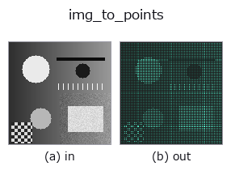

bridge op• 데이터 종류: image → points
• 호출: fullseye.apply(img, "img_to_points", a=0.5, b=0.5)(2-D 는 이미지 1 장 + 스칼라 노브 2 개 a,b∈[0,1] 모델)

*그림은 128×128 합성 입력에서 실제로 실행한 출력. 왼쪽이 입력, 오른쪽이 출력. 점군은 위에서 본 산점도(밝기 = z), 1-D 열은 꺾은선, 볼륨은 z 방향 최대값 투영, 동영상은 가운데 프레임, 복소 영상은 진폭이며, 그림이 되지 않는 반환값은 값 자체를 표시한다.*
노브 a 를 훑기(0.1 / 0.5 / 0.9, 다른 노브는 기본값):
▸ img_to_points: knob a sweep (docs site)
노브 b 를 훑기(0.1 / 0.5 / 0.9, 다른 노브는 기본값):
▸ img_to_points: knob b sweep (docs site)
다른 영상에서도(합성 장면 / 사진 / 동전. 윗줄이 입력, 아랫줄이 그 출력. 노브는 기본값):
▸ img_to_points: other inputs (docs site)
*4열은 컬러 (H,W,3) 입력. 이 op는 채널을 넘나들지 않고 컬러를 다룰 수 있다(색 채널을 세 번째 공간축으로 컨볼루션하지 않음).*
영상을 높이장으로 읽어 (x, y, z) 점군 (N,3)으로 만든다.
> 아래 상세 설명은 원문입니다 —— 요약과 제목은 번역되어 있습니다.
各画素 `(row, col) を 1 点 (x, y, z) = (col * 10/W, row * 10/H, value * 10 * s)`
に写す —— 画像の幅・高さを 一辺 10 の箱 に正規化した座標(`POINTS_BOX`)。
点群 op の橋渡し(`tb_*`)が束縛している半径・境界箱・格子解像度はこの尺度
(連鎖ファザーの種 `[0,10)^3`)を前提にしているので、画素座標のまま渡すと
半径系 op の近傍が空になり占有格子が全 0 になる(実測)。画素に戻すなら
`x * W / 10、y * H / 10。列の規約は camera.depth_to_points` と同じ
(x, y, z) —— `reprconv の (z, y, x)` とは逆なので、その族へ渡すときは
`tb_points_zyx_to_keypoints_uv` 等の入口で読み替えること。
• `a → 高さの倍率 s = 0.25 + 1.75 * a`(a=0.5 で 1.125。値域 [0,1] の画像なら
z の範囲は x, y と同じ桁 [0, 11.25] になり、点群 op が「平面」でなく「地形」を見る)。
• `b → 間引きの歩幅 stride = 1 + int(b * 3)`(b=0.5 で 2。128×128 なら
4,096 点。b=0 で全画素、b=1 で 1/16)。
• 返り値: `(N, 3) float64、N = ceil(H/stride) * ceil(W/stride)`。空にはならない。
• 順序は行優先(row-major)で決定的。同じ入力なら同じ配列。
使いどころ: 点群 op(`tb_alpha_shape_boundary / tb_estimate_point_normals` /
`tb_points_to_voxel` …)を 1 枚の画像から 試す入口。DEM(標高図)を
`value = 標高 / 最大標高` に正規化して渡せば、そのまま地形の点群になる。
• 샘플 데이터 카탈로그(DL URL / 라이선스) —— 2-D 는 skimage.data(BSD/public)+ 합성, 3-D 는 실데이터 소스(Stanford/PDS 등)의 DL URL.
• 연산자의 내력·참고문헌 —— 이 연산자 족의 바탕이 된 연구/기법의 출처.
• 알고리즘의 정전(저자·연도)과 용도는 위의 패밀리 사용 가이드에 적혀 있습니다.
아래 프로그램은 실제로 실행됨을 확인했습니다(그림과 같은 입력). Studio 도움말에서는 이 블록이 버튼이 되어 즉시 불러와 실행할 수 있습니다.
img_to_points 0.50 0.50
▸ Load this pipeline · Load & run
• gallery2d_bridge — py -3.11 examples/gallery2d_bridge.py
points 를 입력으로 받는 것)identity · tb_points_to_voxel · tb_estimate_point_normals · tb_iss_keypoints · tb_angle_3points · tb_project_points · tb_render_point_depth · tb_statistical_outlier_removal
bridge)img_to_keypoints · img_to_signal · img_to_counts · img_to_matrix · img_to_video · img_to_volume · img_to_lightfield · img_to_rgb
*Provenance: ops.py — 2D 연산자 레지스트리. 이 op 노트는 tools/opdocs.py md 가 자동 생성합니다(직접 편집하지 마세요).*
© 2026 Kazufumi Furuse — Fullseye operator documentation. Licensed under Apache-2.0.
{kind=link}
{kind=link}
{kind=link}